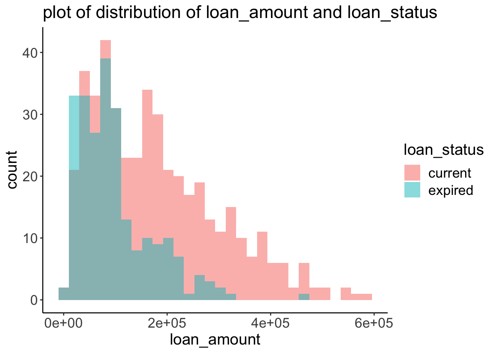
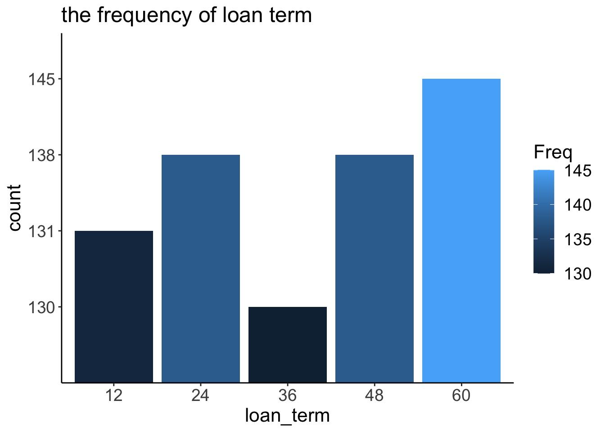
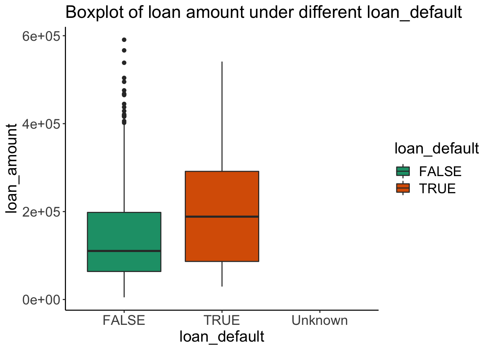
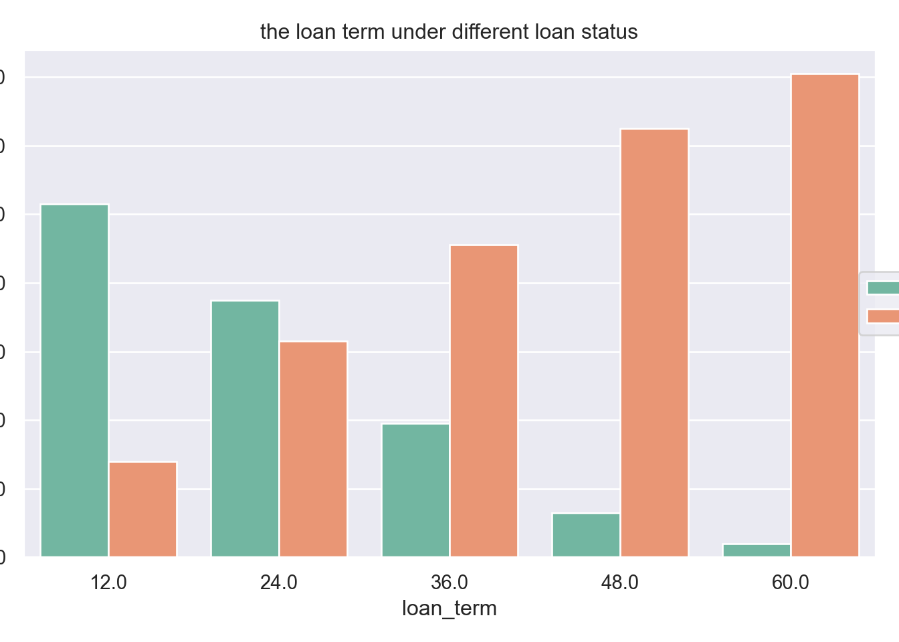
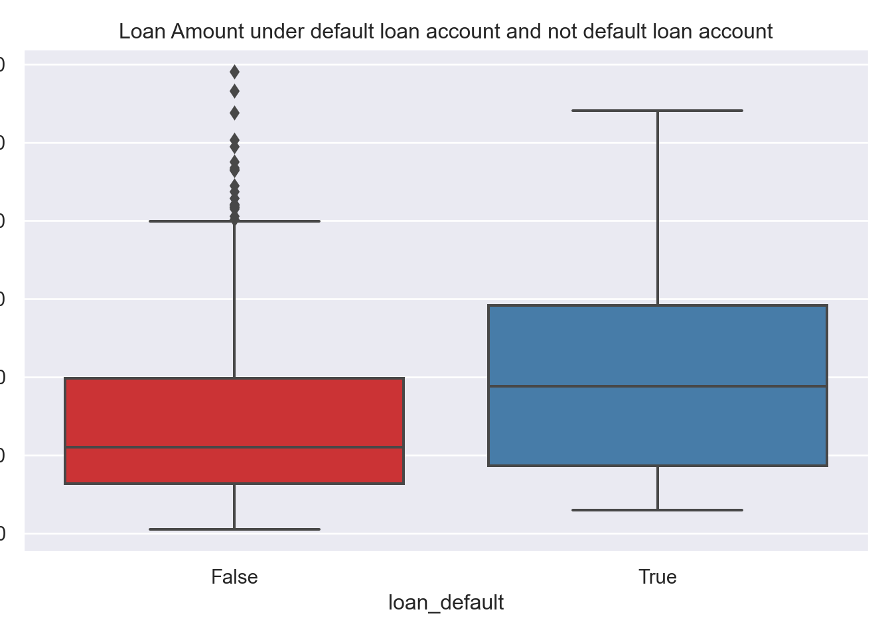

# load datasets
transactions = read.csv('./data/transactions.csv')
accounts = read.csv('./data/accounts_analytical.csv')the distribution of loan_amount
Plot 1: loan_amount versus loan_status
# to plot the distribution of loan_amount under different loan_status
ggplot(accounts, aes(x=loan_amount, fill=loan_status)) +
geom_histogram(alpha=.5, position="identity") +
ggtitle('plot of distribution of loan_amount and loan_status')## `stat_bin()` using `bins = 30`. Pick better value with `binwidth`.## Warning: Removed 3818 rows containing non-finite values (stat_bin).
Plot 2: distribution of loan_term
# count plot of loan_term
loan_term_counts = as.data.frame(table(accounts$loan_term))
ggplot(loan_term_counts,aes(x=as.factor(Var1),y=as.factor(Freq),fill=Freq)) +
geom_bar(stat='identity') +
scale_color_brewer(palette="Dark2") +
xlab("loan_term") +
ylab("count") +
ggtitle('the frequency of loan term')
Plot 3: Boxplot of loan_default, and loan_amount
# to plot the boxplot of loan_default and loan_amount
accounts$loan_default[is.na(accounts$loan_default)] <- 'Unknown'
bp<-ggplot(accounts, aes(x=loan_default, y=loan_amount, fill=loan_default)) +
geom_boxplot()
bp + scale_fill_brewer(palette="Dark2") +
ggtitle('Boxplot of loan amount under different loan_default')## Warning: Removed 3818 rows containing non-finite values (stat_boxplot).
the distribution of loan_amount under different loan_status is similar
but loan_status == True will have kind of higher loan_amount.
we can find loan_term = 36 months has the least count,
but other loan_term has simialr counts by the distribution of loan_term
we can find if loan_default = True, account will have higher loan_amount
than account does not have default loan
# import packages
import pandas as pd
import matplotlib.pyplot as plt
import seaborn as snstransactions = pd.read_csv('./data/transactions.csv')## sys:1: DtypeWarning: Columns (6) have mixed types.Specify dtype option on import or set low_memory=False.accounts = pd.read_csv('./data/accounts_analytical.csv')Plot One: Loan Term versus Loan Status
# use loan_status as hue to plot loan term
ax = sns.countplot(x='loan_term',hue='loan_status',data=accounts,palette='Set2')
ax.legend(loc='center right', bbox_to_anchor=(1.15, 0.5), ncol=1)
ax.set_title('the loan term under different loan status')
Plot Two: Loan Default versus Loan Amount
ax = sns.boxplot(x='loan_default',y='loan_amount',data=accounts,palette='Set1')
ax.set_title('Loan Amount under default loan account and not default loan account')
ax
and most loan_status = current has long loan term like 48 and 60 months
2.loan_default = True account have higher loan amount than loan_default = False account.